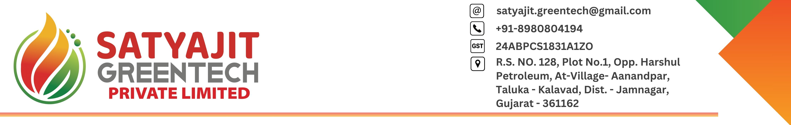

Logo

Registered on Feb 18, 2026
U38300BR2026PTC082692
PAN: AAMCK6158N*
TAN: PTNK05753G*
Address: Ward No 7 Sakari, Sarswati Shishu Mandir, Kudra, Koura, Kaimur (Bhabua)- 821108, Bihar
ARN AA100226073567C
Application Date: Feb 23, 2026
Approval Date: Feb 23, 2026
Unique ID: 10AAMCK6158N1Z5
Login credentials sent to registered email ID
1. Talk to Lawyer about land lease and get a sample lease document - Sanjay
2. Finalize and seal the land lease in Goloudih on paper and get possession of land - Sanjay
1. Print, Sign and courier Bank opening Board Resolution - Vinay
2. Visit Proveg Biocoal Plant in Faridabad - Vinay
3. Create account in GeM portal and get Nabinagar tender info for 2026. Also get who submitted bid for it? - Vinay
4. Get quotes from machinery & equipment listed in DPR (plant, tractor, mover, rake, bailer) and compare them - Vinay
1. Make a Letter Head for Company PDF documents - Amit
2. Develop a Logo for company - Amit
3. Open a Bank Account for company - Amit
4. MSME registration under udyam portal to be recognized as an MSME unit & get an Udyam registration nbr - Amit
1. Receice company PAN & TAN cards in physical form.
2. Collect DSC from CA and reset all DSC pins.
3. Consider applying for DIPP certification. Department for Promotion of Industry and Internal Trade


1. Annual General Meeting (AGM) within 6 months from end of financial year which is by Sep 30. To approve financial statements, declare dividends, appoint auditors, discuss key matters.
2. Filing of Annual Returns. File form AOC-4 (financial statements, balance sheet, profit & loss account, auditor's report, within 30 days of AGM.
3. File form MGT-7 annual return detailing shareholders, directors, and other company details within 60 days of AGM.
4*. Board meetings: conduct at least 4 board meetings in a year, with a maximum gap of 120 days between two meetings.
5*. the first board meeting must be held within 30 days of incorporation.
6*. maintain minutes of board meetings and resolutions.
7*. Appointment a statutory auditor within 30 days of incorporation for a term of 5 years.
8*. File form ADT-1 to notify the RoC about the auditor's appointment.
9. Prepare a director's report to be presented at the AGM, detailing the company's performance, compliance, and other statutory disclosers.
10. File company's income tax return annually by Sep 30 for the previous financial year.
11. Deduct TDS on applicable transactions (salaries, professional fees) and file quarterly TDS returns (form 24Q, 26Q, etc.) by the respective due dates.
12. Deposit TDS to the govt within 7 days of the following month.
13. File monthly and quarterly GST returns (GSTR-1, GSTR-3B) and an annual return (GSTR-9) by the prescribed deadlines.
14. Ensure timely payments of GST collected.
15. Pay advance tax in installments if tax liability exceeds rupees 10,000 in a financial year. Deadlines are June 15, Sep 15, Dec 15, and March 15.
16. Maintain proper books of accounts as per Section 128 of the Companies Act 2013. Including financial transactions, assets, and liabilities.
17. Prepare financial statements (balance sheet, profit & loss statement, cash flow statement)
18. Ensure accounts are audited by a statutory auditor if the company's turnover exceeds 40 lakhs or the paid up capital exceeds 25 lakhs.
19. Register for Employees Provident Fund if 20 or more employees. File monthly returns.
20. Register for Employees State Insurance (ESI) if applicable and file returns.
21. Comply with labor laws like the Payment of wages Act, Minimum Wages Act, etc.
22. Maintain or renew licenses/registrations etc.
23. Maintain register of members (shareholders)
24. Register of Directors and Key Managerial Personnel (KMP)
25. Register of contracts or arrangements in which directors are interested.
26. update records for any changes like share transfers, director appointments, resignations, and file relevant forms with RoC(Form DIR-12 director change, Form SH-7 change in authorized capital, ...)
27*. Maintain a separate bank account for the company and ensure all transactions (share capital money, capital expenses, operational expenses, revenue, tax payments, etc) are routed through it.